首页
上一页
14
15
16
17
18
19
19
20
21
22
23
24
下一页
末页
defanive2
无尽黑夜
14
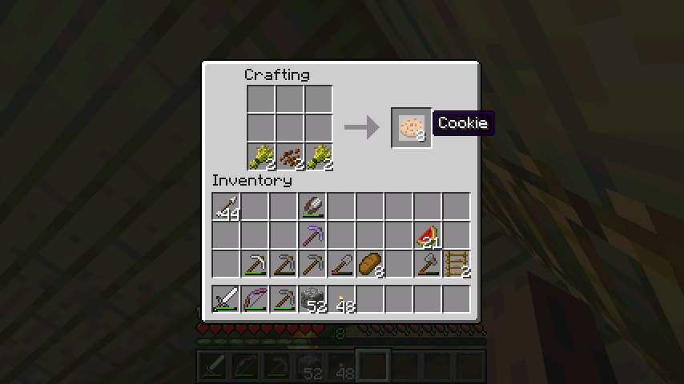
话说自从可可豆可种植之后廉价了很多，来试试饼干
现在饼干一个回复1格饥饿，所以很不错的，和西瓜有得比了
821楼
2012-08-12 23:51
defanive2
无尽黑夜
14
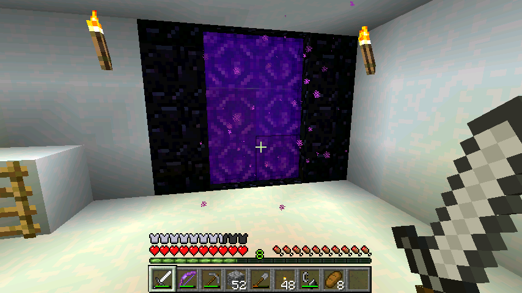
地狱门
这么久了还是没有出现1.3所谓的传送猪人过来
822楼
2012-08-12 23:53
defanive2
无尽黑夜
14
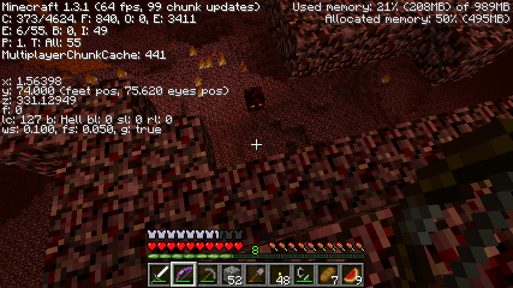
这次打算一直沿着z增加的方向走，希望能找到堡垒
不过意外找到了magma cube（怎么翻译，地狱史莱姆？）
后来往下走之后就没找到了。。RP。。
825楼
2012-08-12 23:55
defanive2
无尽黑夜
14
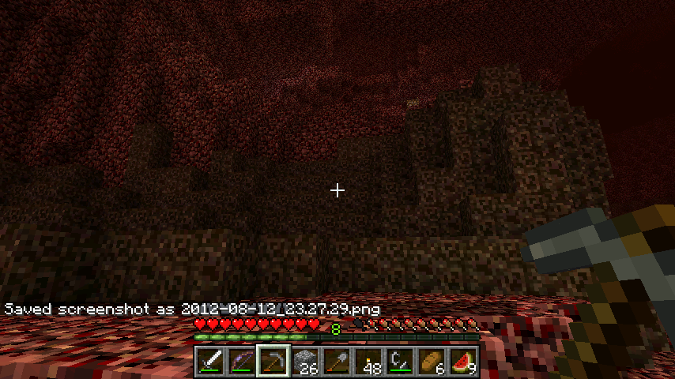
发现了很多的灵魂沙，收集了不到20个左右，暂时没有需求
826楼
2012-08-12 23:56
defanive2
无尽黑夜
14
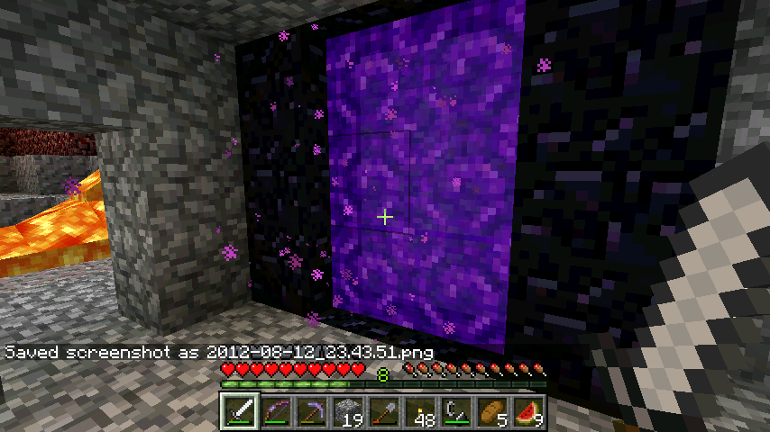
最后z从30一直走到了880左右，还是没有发现任何堡垒
资源不足，于是跑回来了
一趟毫无收获，杯具
827楼
2012-08-12 23:57
defanive2
无尽黑夜
14
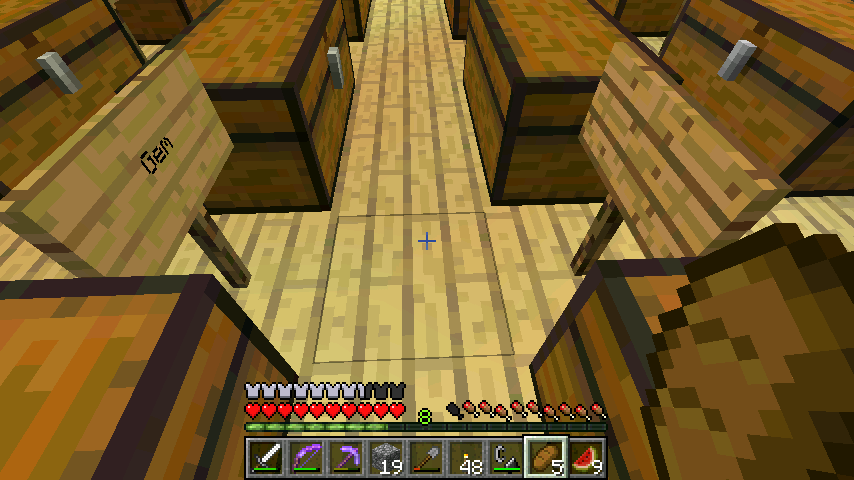
这个算是BUG？注意牌子的前面和背面，纹理不同
830楼
2012-08-13 00:51
defanive2
无尽黑夜
14
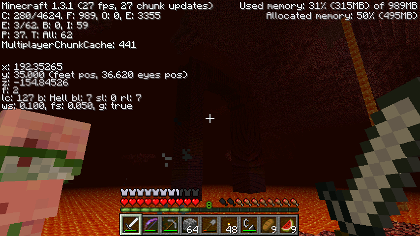
向N个方向推进之后终于找到了堡垒的一部分
831楼
2012-08-13 00:52
defanive2
无尽黑夜
14
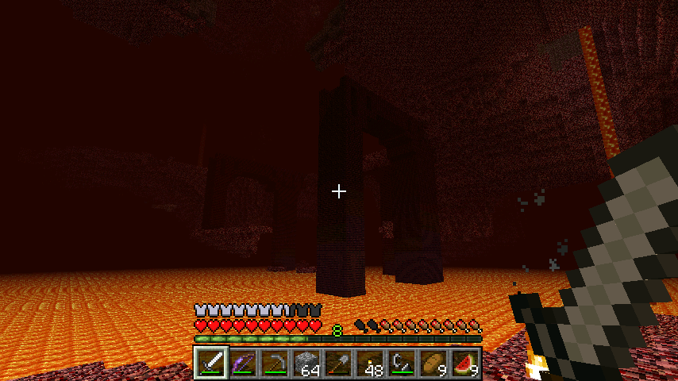
这个时候就需要把渲染距离调成远了，可以看到堡垒主要在右边
832楼
2012-08-13 00:53
defanive2
无尽黑夜
14
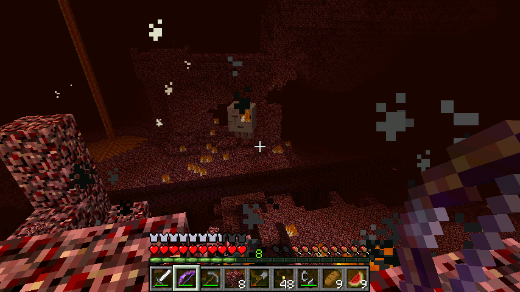
遭遇ghast埋伏。。
833楼
2012-08-13 00:54
defanive2
无尽黑夜
14
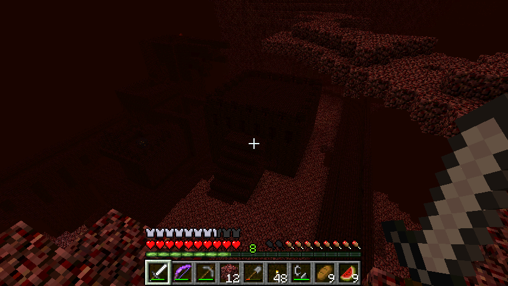
从来没见过堡垒有这种结构我擦
834楼
2012-08-13 00:55
defanive2
无尽黑夜
14
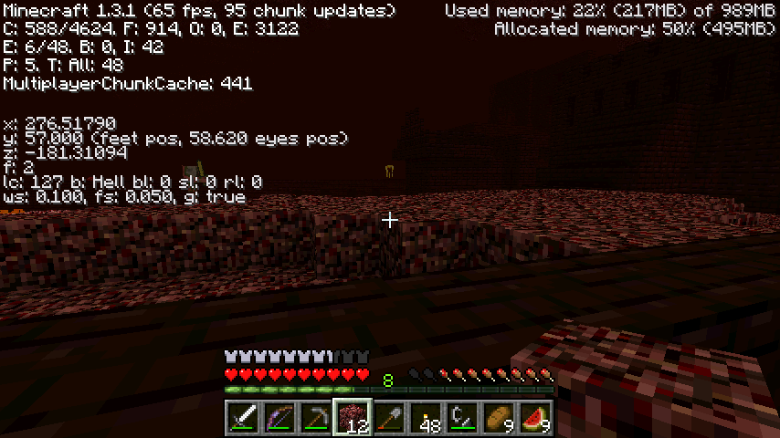
可以看到有烈焰人生成，说明有刷怪笼
堡垒里面刷怪笼出现几率太高了。。
835楼
2012-08-13 00:56
defanive2
无尽黑夜
14
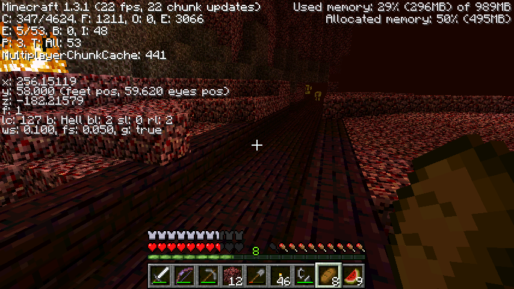
墙角也有烈焰人，刷怪笼这么多，我擦太不科学了。。
837楼
2012-08-13 00:57
defanive2
无尽黑夜
14
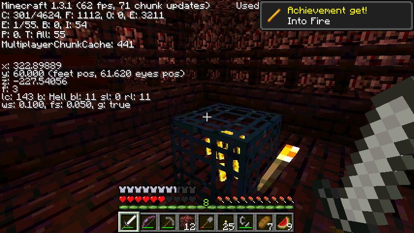
先征服了这个刷怪笼，这个世界里第一次获得烈焰棒
838楼
2012-08-13 00:58
defanive2
无尽黑夜
14
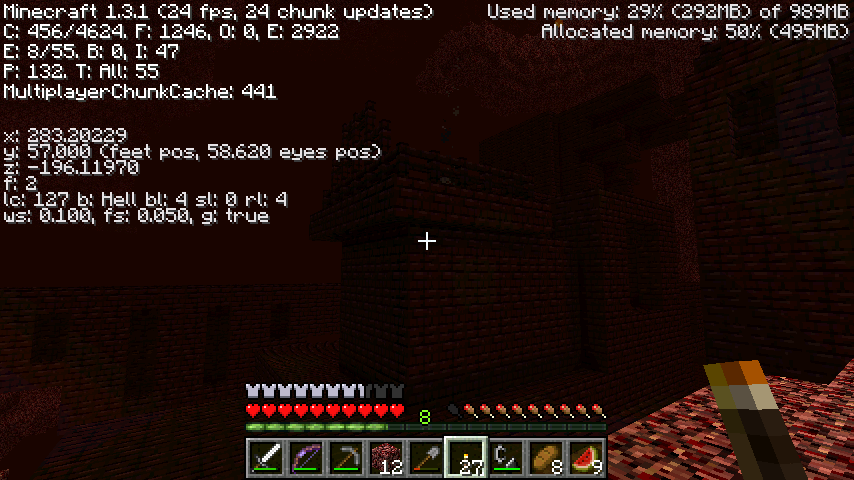
从远处看第一次发现的刷怪笼，这个地理位置很好，很适合刷烈焰棒
839楼
2012-08-13 00:59
defanive2
无尽黑夜
14
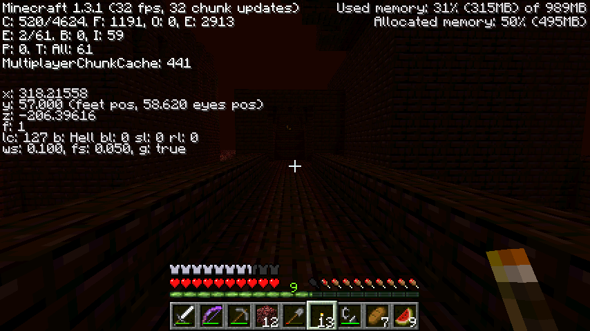
找到从内部的入口，准备向前冲！
由于太快了没办法截图征服的过程
大概就是，最快速度冲上去，就算刷怪了也不管，先插火柴
亮度能很有效的降低刷怪速度
然后杀死最近的几只，再**火柴
841楼
2012-08-13 01:02
defanive2
无尽黑夜
14
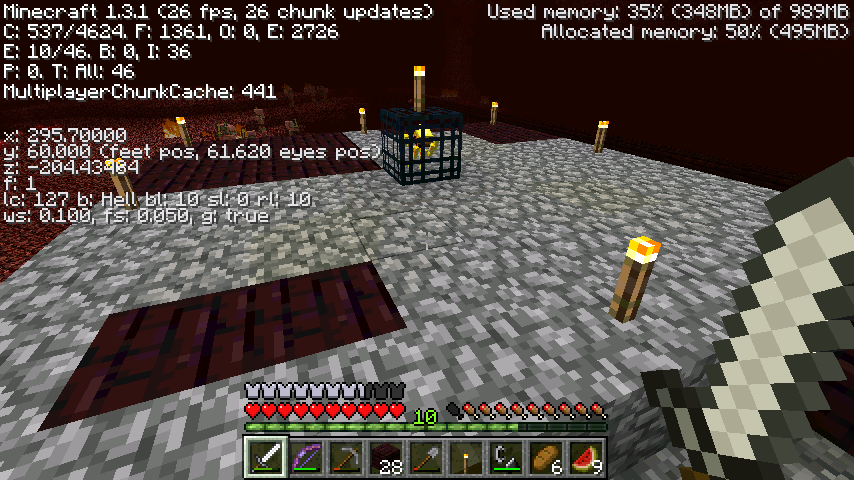
然后造一个9x9的平台并点亮，这个是保证不刷怪的好方法
不过火柴还要再插几个
中途被狙击了很多次。。
842楼
2012-08-13 01:03
defanive2
无尽黑夜
14
先回家补装备，然后再来
843楼
2012-08-13 01:03
defanive2
无尽黑夜
14
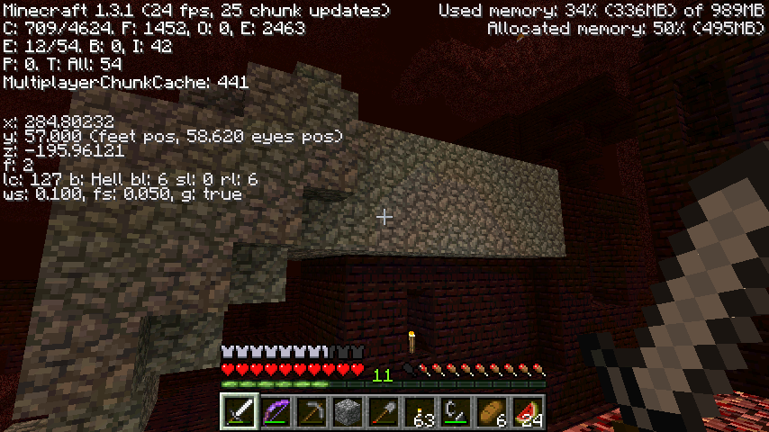
拿了一堆的鹅卵石，去进行改造
去到之后先把9x9x3的刷怪区域都用鹅卵石封住，现在刷怪笼就没办法刷怪了
PS 中途又被狙击无数次。。
845楼
2012-08-13 02:07
defanive2
无尽黑夜
14
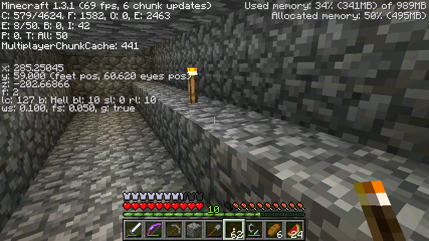
然后在这个9x9x3的区域里面挖出一条1x9x2的空白（火柴插的那个地方）
这个空白区域是留给刷怪的
然后做一个包围这个区域的一个小房间，让人可以在里面杀怪
890楼
2012-08-13 02:17
defanive2
无尽黑夜
14
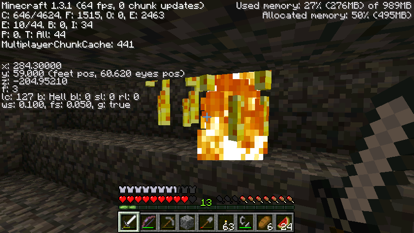
出怪了，铁剑撸死之
891楼
2012-08-13 02:21
defanive2
无尽黑夜
14
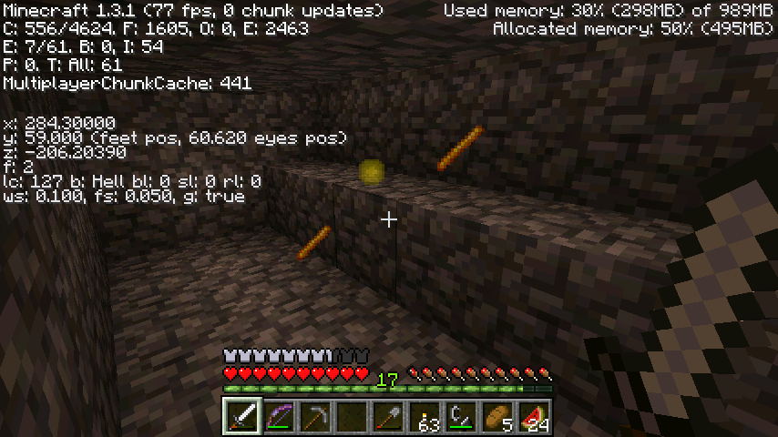
得到了很多的火焰棒 = =
892楼
2012-08-13 02:22
defanive2
无尽黑夜
14
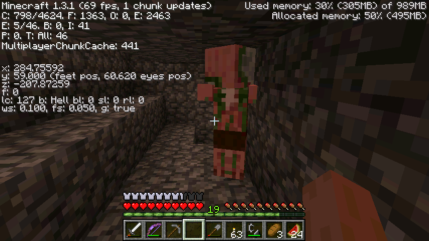
一只猪人寂寞的和我进来玩了 = =
PS 猪人感觉杀来没什么意义，不但会被围攻而且掉落的金粒用处也不大
893楼
2012-08-13 02:24
defanive2
无尽黑夜
14
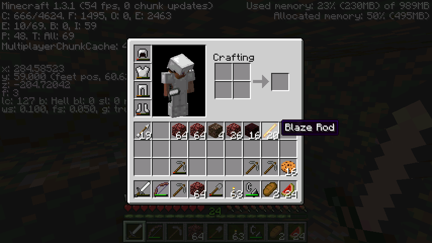
收获20个烈焰棒，感觉应该够用了
894楼
2012-08-13 02:33
defanive2
无尽黑夜
14
LV24了，回家刷一下经验塔准备附魔钻石剑
895楼
2012-08-13 02:34
defanive2
无尽黑夜
14
中途不小心摔死了一次 = =
东西都找回来了但是等级掉到了LV5
于是决定不刷了睡觉去
896楼
2012-08-13 02:44
defanive2
无尽黑夜
14
好了继续打MC，短期目标是先去地狱堡垒收集一些物资
主要是地狱孢子，虽然不炼药，不过还是收集一些吧，作为MC的一大元素
911楼
2012-08-13 14:51
defanive2
无尽黑夜
14
现在这个帖子已经有100个顶，1372篇回帖，32389次浏览
感谢大家的支持
912楼
2012-08-13 14:53
defanive2
无尽黑夜
14
昨晚合成了一些染料，然后把各色的羊和羊毛都收集齐了
913楼
2012-08-13 14:54
defanive2
无尽黑夜
14
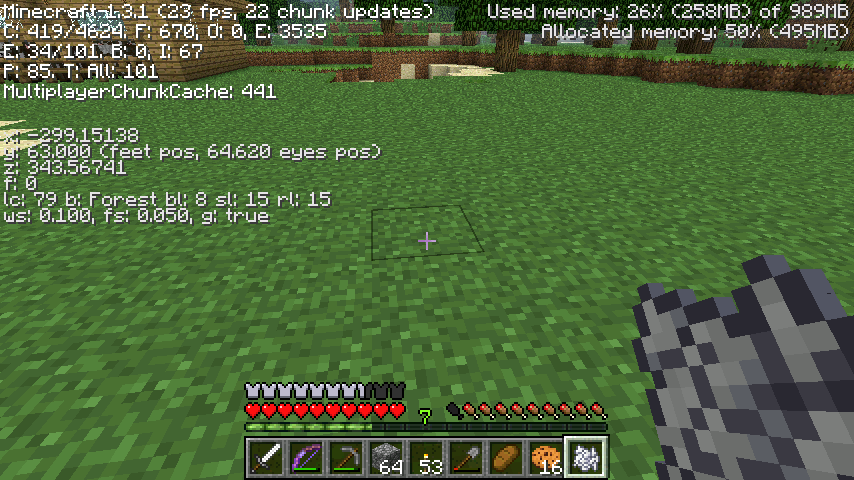
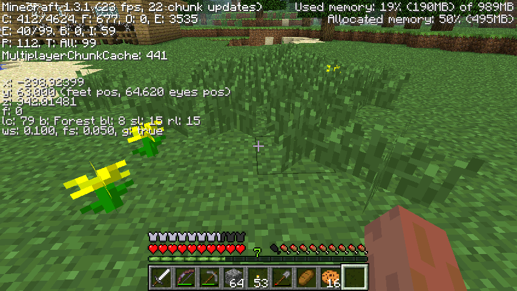
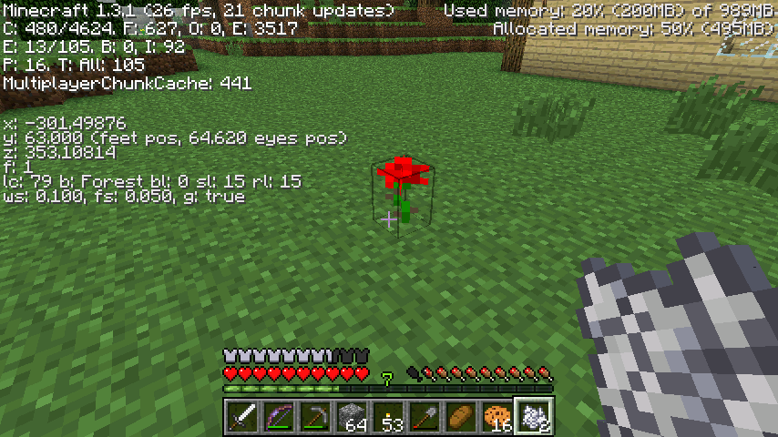
首先对草地使用金坷垃，可以得到一堆草
很大几率下可以得到黄花和红花
914楼
2012-08-13 14:56
defanive2
无尽黑夜
14
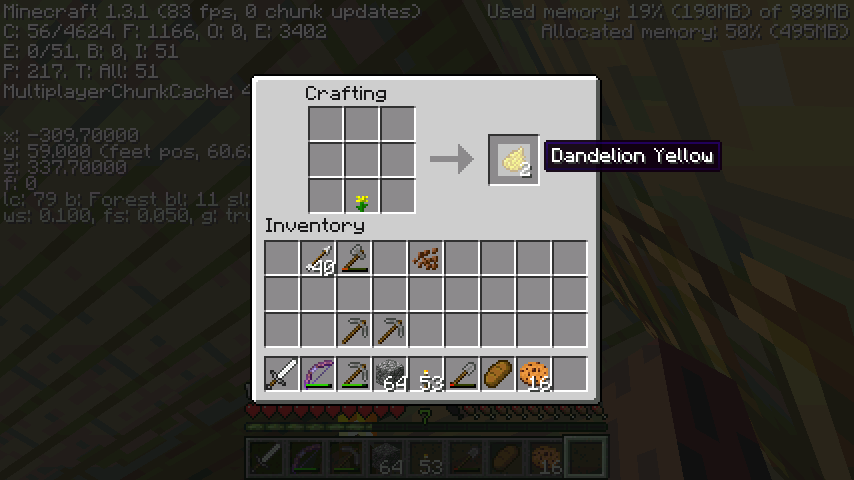
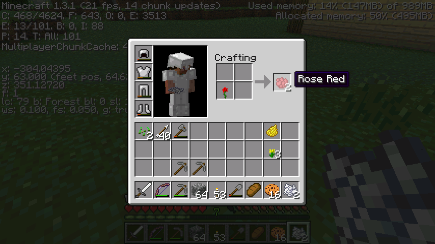
通过对这两种花合成可以得到两种基础染料，红色和黄色
PS 金坷垃也是基础染料，从骨头获得，是白色
915楼
2012-08-13 14:58
首页
上一页
14
15
16
17
18
19
19
20
21
22
23
24
下一页
末页